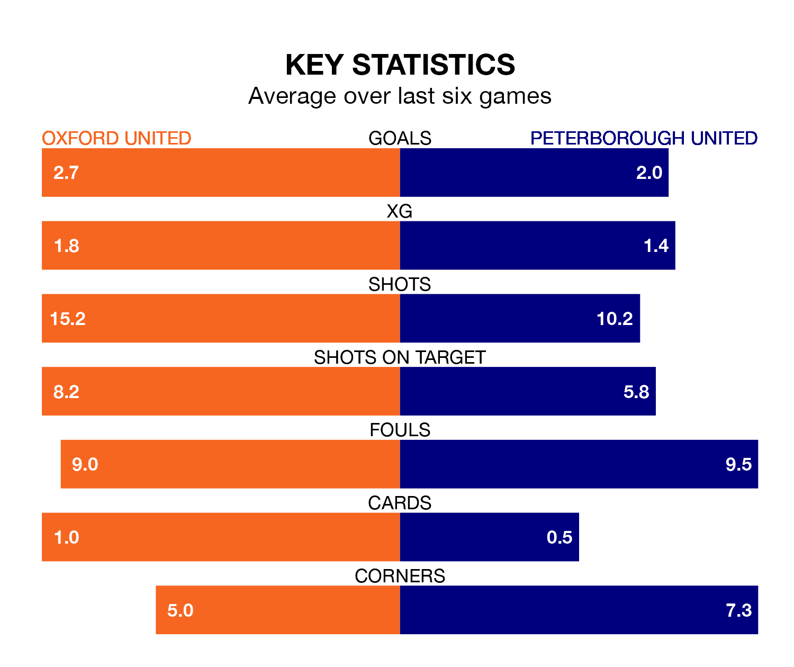

Saturday's late match between Oxford United and Peterborough United promises to be one for the neutrals, as two of EFL League One's most free-scoring sides go head-to-head.
Ahead of the game at the Kassam Stadium, the Us and the Posh sit fourth and top in the goal-scoring charts, with 79 and 89 goals respectively.
Striker Mark Thomas Harris leads the way for the home side, having bagged 15 goals in their 46 games to date.
And Ephron Mason-Clark has been the main man in the opponents' penalty box for Peterborough, with 14 goals.
In the last 10 years, Oxford and Peterborough have played each other on 16 occasions. Oxford won seven of them, Peterborough six, and they drew three times.
On average, the Us scored 1.3 goals and the Posh 1.2 in those matches.
Their last meeting was on April 13, when Oxford won 5-0 at home.
Peterborough are fourth in the table after 46 games, of which they have won 25 and drawn nine, earning 84 points.
Oxford are one place behind Peterborough United in fifth, with 22 wins and 11 draws putting them on 77 points.
The Posh's Harrison Burrows is among the league's most creative players, racking up 14 assists in 45 appearances so far this season, and holding second spot in EFL League One's assist charts.
For Oxford United, Cameron Brannagan has set up the most goals, having laid on nine assists in 43 games.
The Us are in good form in EFL League One, with four wins and a draw from their last six games.
With three wins and a draw over that period, the away side's form is worse – they have taken 10 points from 18, compared to the hosts' 13.
Oxford's last match was on April 27, a 2-1 win against Exeter City, with Brannagan and Mark Thomas Harris getting the goals for the Us.
Peterborough drew 3-3 with Bolton Wanderers last time out, also on April 27, with Malik Maine Mothersille (two) and Joel Randall on the scoresheet.
Updated: 10:44 (UTC), 30/04/24